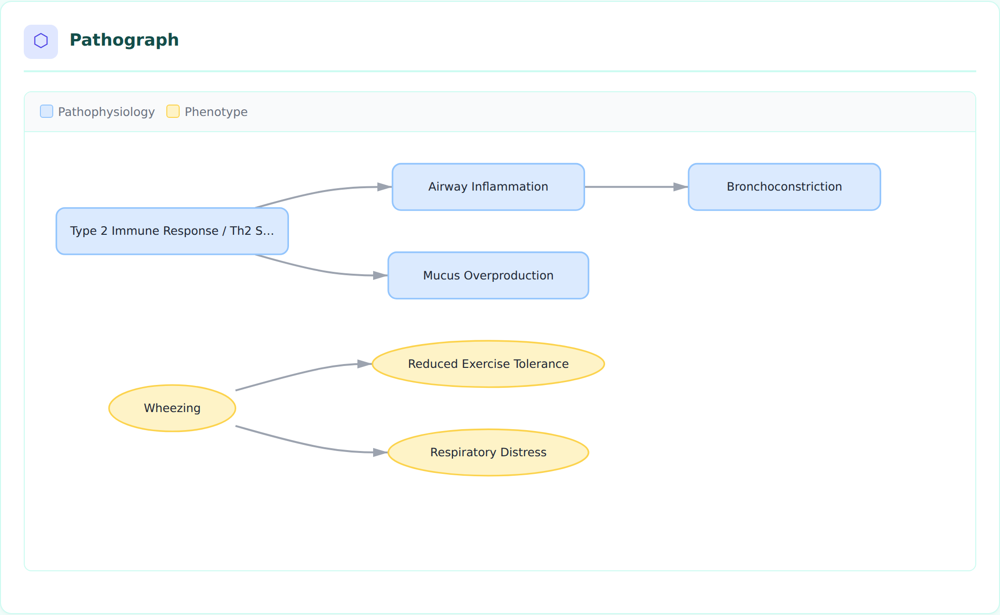
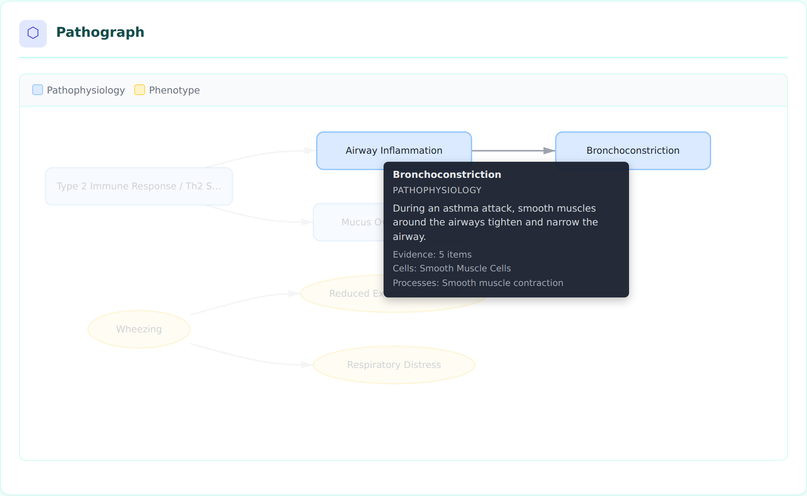
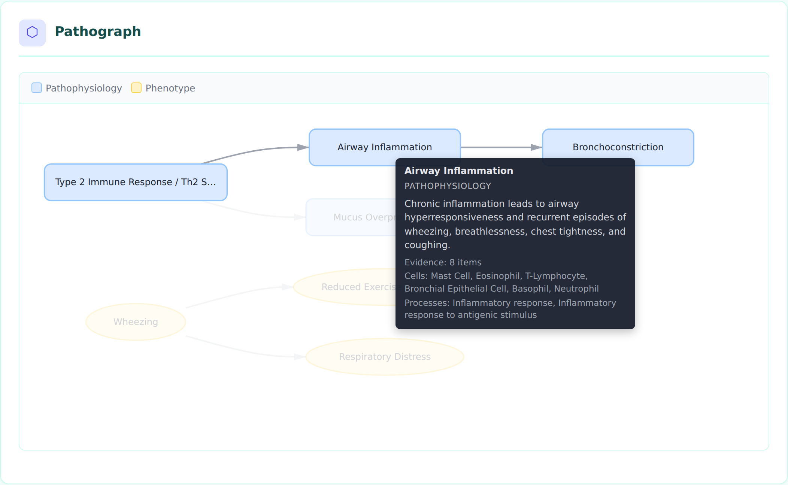
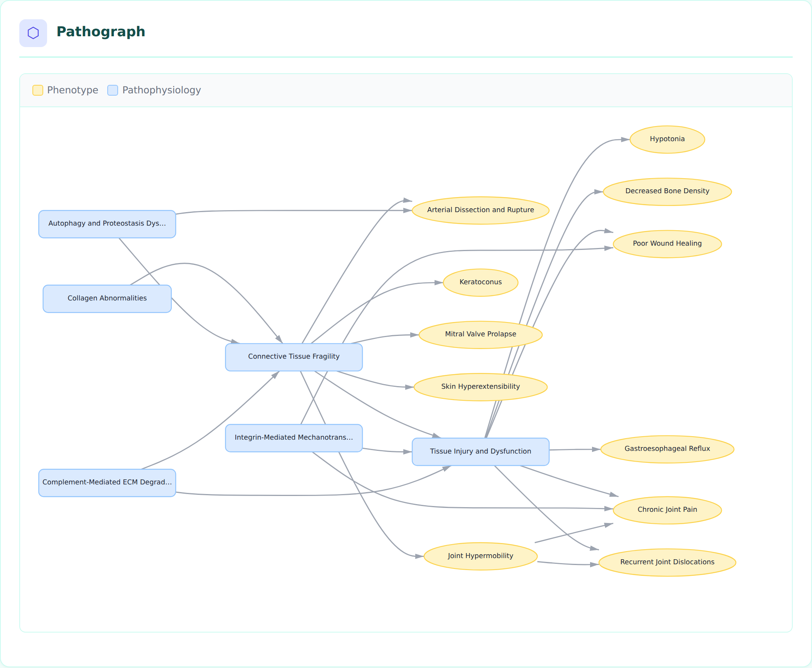

Pathographs
Pathographs are interactive, directed-graph visualizations of disease causal mechanism networks. They replace the previous static Mermaid diagrams on disorder HTML pages with a D3.js + dagre-based rendering that supports hover tooltips, click-to-highlight, legend filtering, and zoom/pan.
Overview
Each disorder page automatically generates a pathograph from the downstream edges in pathophysiology entries and the sequelae edges in phenotypes. The graph shows how upstream mechanisms cause downstream effects and how phenotypes lead to further complications.

Asthma pathograph showing Type 2 Immune Response driving Airway Inflammation and Mucus Overproduction, with Wheezing leading to downstream phenotypes.Node Types and Shapes
Nodes are drawn from six sections of the disorder YAML file, each with a distinct shape and color:
| Node Type | Shape | Color | Source Section |
|---|---|---|---|
| Pathophysiology | Rounded rectangle | Blue (#dbeafe) | pathophysiology |
| Phenotype | Ellipse | Amber (#fef3c7) | phenotypes |
| Environmental | Diamond | Green (#dcfce7) | environmental |
| Genetic | Hexagon | Purple (#f3e8ff) | genetic |
| Treatment | Rectangle | Pink (#fce7f3) | treatments |
| Biochemical | Circle | Indigo (#e0e7ff) | biochemical |
| Orphan (undefined target) | Dashed border, red | Red (#fee2e2) | N/A |
Different shapes (not just colors) improve accessibility for colorblind users.
Interactive Features
Hover Tooltips
Hovering over a node displays a tooltip with rich metadata pulled from the disorder YAML:
- Node name and type
- Description (truncated to 200 characters)
- Evidence count (number of PMID-backed evidence items)
- Cell types (CL ontology terms)
- Biological processes (GO terms)
- Genes (HGNC terms)
- Anatomical locations (UBERON terms)
- Frequency and severity (for phenotypes)
- Ontology term ID

Tooltip for the Bronchoconstriction node showing its description, 5 evidence items, cell types (Smooth Muscle Cells), and biological processes.Click to Highlight
Clicking a node highlights it and its direct neighbors (upstream and downstream), dimming all other nodes and edges. This helps trace causal chains in complex graphs.

Clicking Airway Inflammation highlights its upstream cause (Type 2 Immune Response) and downstream effect (Bronchoconstriction), dimming unrelated nodes.Click the background to clear the highlight.
Legend Filtering
The legend bar at the top of the pathograph shows which node types appear in the graph. Click a legend item to toggle visibility of that node type. This is useful for focusing on specific aspects of the mechanism network.
Zoom and Pan
- Scroll to zoom in/out (0.3x to 3x)
- Click and drag the background to pan
- The graph uses
viewBoxscaling so it fits the container width by default
Complex Graphs
For disorders with many mechanisms and phenotypes, the dagre layout algorithm arranges nodes in a hierarchical left-to-right flow, avoiding overlaps:

Ehlers-Danlos Syndrome pathograph with 17 nodes showing collagen abnormalities cascading through connective tissue fragility to multiple downstream phenotypes.How Pathograph Data is Generated
The pathograph pipeline has three stages:
-
build_causal_graph(disorder)(graph.py) — Extracts nodes from six disorder sections and edges fromdownstream/sequelaefields. Performs referential integrity checks (orphan target detection). -
graph_to_json(graph, disorder)(graph.py) — Serializes the graph to JSON, enriching each node with metadata from the raw YAML data (evidence counts, cell types, GO processes, genes, locations, etc.). -
Template rendering (
disorder.html.j2) — Embeds the JSON inline and renders it using D3.js with dagre layout. The visualization is self-contained in each HTML page with no server-side dependencies.
Data Flow
disorder YAML
|
v
build_causal_graph() --> CausalGraph (nodes + edges + integrity issues)
|
v
graph_to_json() --> JSON string with enriched node metadata
|
v
disorder.html.j2 --> Inline <script> calling renderPathograph()
|
v
D3.js + dagre --> Interactive SVG visualization
YAML Structure That Drives Pathographs
Edges come from two sources:
Pathophysiology downstream edges
pathophysiology:
- name: Airway Inflammation
description: Chronic inflammation leads to airway hyperresponsiveness...
downstream:
- target: Bronchoconstriction
description: AHR provides the substrate for bronchoconstriction...
evidence:
- reference: PMID:38395082
supports: SUPPORT
snippet: "..."
Phenotype sequelae edges
phenotypes:
- name: Wheezing
sequelae:
- target: Respiratory Distress
- target: Reduced Exercise Tolerance
The target field must match the name of another entry in any section. Unresolved targets appear as orphan nodes with dashed red borders.
Node Granularity and Debundling (case study: CSAN)
A pathograph is only as informative as the node boundaries the curator chooses.
Compressing several mechanistic layers into one "gain-of-function" node produces a
valid but shallow graph that hides the actual causal wiring, and any node that is not
on an edge (downstream/sequelae, target_phenotypes/target_mechanisms) is
dropped from the serialized graph entirely. Crouzon syndrome with acanthosis nigricans
(CSAN, MONDO:0012833, recurrent FGFR3 p.Ala391Glu) is a compact worked example
(issue #4158, debundled in
PR #4182).
Before — a bundled four-node chain in which one node carried the variant, the receptor biophysics, and two effector branches at once, and the syndrome-defining cutaneous phenotype was present but disconnected (so invisible in the pathograph):
FGFR3 A391E Gain-of-Function
-> Sustained MAPK/STAT signaling in suture osteoblasts
-> Premature cranial suture fusion
-> Craniosynostosis
After — the single receptor lesion is split into its biophysical layers and then forked into the skeletal and cutaneous phenotypes it actually drives:
FGFR3 A391E Transmembrane Dimer Stabilization
-> Constitutive FGFR3 Kinase Autophosphorylation # branch point
-> FRS2-GRB2-SOS RAS-MAPK Signaling
-> Cranial Suture Osteoblast Differentiation
-> Premature cranial suture fusion -> Craniosynostosis
-> FGFR3-STAT Signaling # parallel effector, kept separate
-> FGFR3 Signaling in Keratinocytes # cutaneous fork
-> Epidermal Hyperkeratosis and Hyperpigmentation -> Acanthosis Nigricans
Modeling rules this case study illustrates
- One node = one mechanistic claim. Split a node when it bundles steps that have
separable evidence, different cell types/locations, or different downstream
targets. In CSAN, dimer stabilization (
PMID:21536014,PMID:23437153) and activation-loop autophosphorylation are distinct, separately-evidenced biophysical steps, so they became two nodes rather than one "gain-of-function" node. - Branch at the real branch point, not at a pathway label. The activated receptor
(
Constitutive FGFR3 Kinase Autophosphorylation) is the node from which RAS-MAPK, STAT, and the keratinocyte branch all diverge. Modeling the fork at the receptor — rather than inside a single "MAPK/STAT" node — makes the parallel outputs explicit. - Do not merge parallel effectors under a pathway shorthand. STAT and ERK are parallel FGFR3 outputs with distinct biology; "MAPK/STAT" as one node hid that. Keep them as sibling nodes unless a specific downstream phenotype edge genuinely requires both inputs.
- Connect every syndrome-defining phenotype into the graph. Acanthosis nigricans is
diagnostic for CSAN but was an orphan before debundling. Adding the keratinocyte →
epidermal-change → phenotype branch (and linking treatments via
target_phenotypes) is what brings these nodes into the serialized pathograph. - Make edge confidence visible, and let it expose knowledge gaps. Edge confidence
varies by layer: human genetics and craniosynostosis are strongly evidenced
(
causal_link_type: DIRECT/INDIRECT_KNOWN_INTERMEDIATES), whereas the keratinocyte route to flexural acanthosis is inferential (causal_link_type: INDIRECT_UNKNOWN_INTERMEDIATES, nodemechanism_confidence: PROVISIONAL). Rather than overstate that edge, the cutaneous branch carries an explicitKNOWLEDGE_GAPdiscussion (gap_csan_cutaneous_fgfr3_branch) attached to the provisional nodes and phenotype.
When not to debundle
Granularity has a cost: a graph that expands every canonical pathway into its textbook
intermediates becomes pathway-heavy and harder to read without adding disease-specific
insight. Split a node only when the finer boundary carries its own evidence, its own
ontology annotations, or a distinct downstream target. If an intermediate has none of
those, leave it folded into the adjacent node and capture the detail in the node
description instead. The goal is a graph whose node boundaries mirror the points where
the causal evidence actually changes.
Dependencies
The pathograph loads two libraries via CDN:
- D3.js v7 (
https://d3js.org/d3.v7.min.js) — SVG rendering, zoom, event handling - dagre 0.8.5 (
https://cdn.jsdelivr.net/npm/dagre@0.8.5/dist/dagre.min.js) — Hierarchical graph layout algorithm
No build step or bundling is required. The libraries load directly in the browser.
Accessibility
Each pathograph SVG includes:
- role="img" attribute
- <title> element with the disorder name
- <desc> element describing the visualization purpose
- Distinct shapes per node type (not just color-coded)
- Keyboard-accessible zoom via browser native scroll
Regenerating Screenshots
The screenshot script uses Playwright with Chromium:
# Ensure D3/dagre are cached locally for headless browser
curl -sL https://d3js.org/d3.v7.min.js -o /tmp/d3.v7.min.js
curl -sL https://cdn.jsdelivr.net/npm/dagre@0.8.5/dist/dagre.min.js -o /tmp/dagre.min.js
# Render disorder pages first
uv run python -m dismech.render kb/disorders/Asthma.yaml
# Take screenshots
node scripts/screenshot_pathograph.js
Screenshots are saved to docs/images/pathograph_*.png.